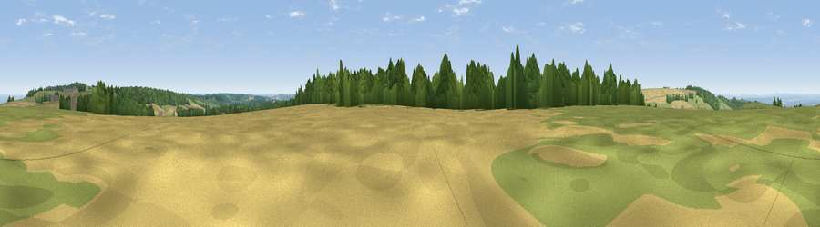

Viewpoint near Snowshill
#16867 in England · top 36% of its area beats it · near Snowshill · access?Where it is
The exact computed spot (SP 10025 32675). Click the marker for map links.
Public access: no public right of way or access land is recorded at this exact spot — it may be on private land. Computed from Natural England's CRoW access layer and OpenStreetMap rights of way — not the legal definitive map. Always verify locally.
The view, rendered

A 360° render of this exact spot computed from the terrain model, tree cover and land cover — summer colours, afternoon light, calibrated against photographs of famous viewpoints. Real trees, hedges and buildings will differ in detail.
The panorama
Grey silhouette: terrain skyline in each direction (720 bearings, Earth curvature and refraction included). Dashed green: skyline with trees (+15 m) and buildings (+8 m) as obstacles. Blue strip: how far the ground is visible on each bearing.
Where the view opens
Wedge length = distance to the farthest visible ground on that bearing (vegetation-aware). Rings at 10, 25 and 50 km.
What fills the view
39% cropland · 33% grassland · 27% woodland ·
Angular shares of the visible panorama (visual magnitude), not map area. Landscape diversity 0.48 (0–1 Shannon).
Key numbers
More beautiful places nearby
The staircase of upgrades: each row has a higher view potential than everything closer. Driving times are estimates from straight-line distance, calibrated against real road routing — check an actual route before setting out.
| Place | Direction | Drive | Score |
|---|---|---|---|
| Viewpoint near Snowshill | NNE · 2 km | ~5 min | 65.4 |
| Viewpoint near Stanton | NW · 2 km | ~6 min | 74.2 |
| Viewpoint near Stanton | W · 3 km | ~7 min | 75.8 |
| Broadway Hill | NNE · 4 km | ~9 min | 77.7 |
| Viewpoint near Alstone | W · 13 km | ~23 min | 79.8 |
| Nottingham Hill | WSW · 13 km | ~24 min | 80.9 |
| Bredon Hill | WNW · 16 km | ~28 min | 83.0 |
| Black Hill | WNW · 34 km | ~52 min | 83.1 |
51.99244, -1.85541 · source: screening · position refined by local search. Computed location — check access rights before visiting.